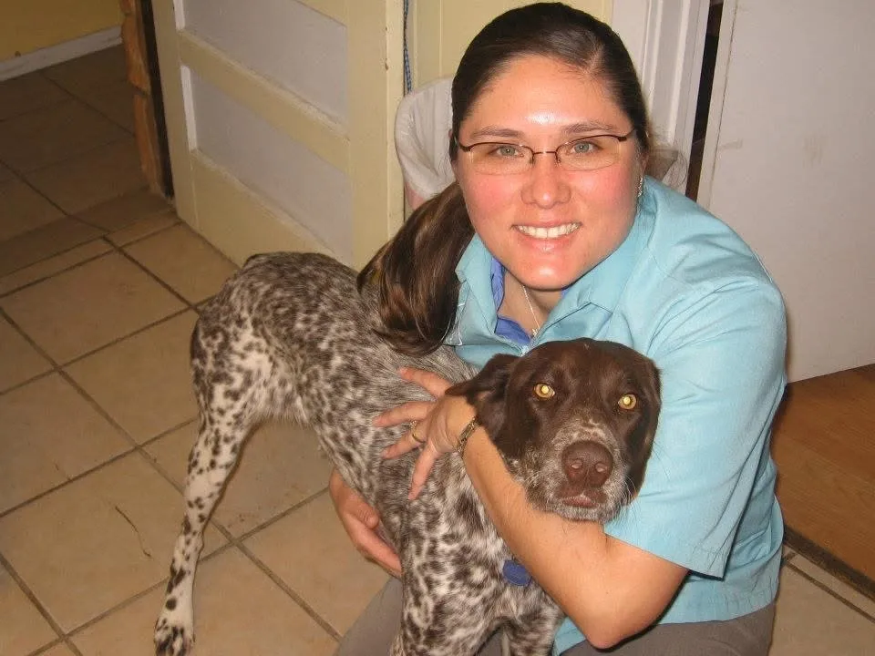
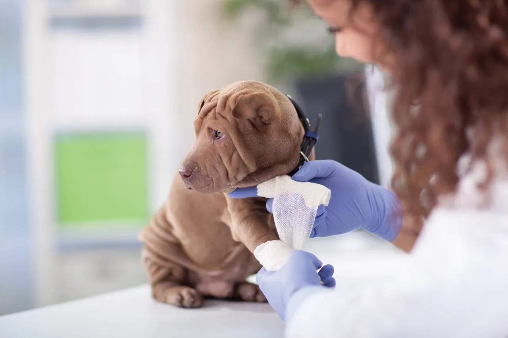

About Us
“Caring for generations of dogs, cats, and the families who love them.”
Since 1973, Marbach Road Animal Hospital has been a part of the West San Antonio community, caring for generations of dogs, cats, and the families who love them.
That history is something we are proud to carry forward.
A New Chapter

In 2026, Dr. Tracy Green became the new owner of Marbach Road Animal Hospital, beginning an exciting new chapter for this long-standing San Antonio practice.
“More than two decades of experience in small-animal medicine”
Dr. Green is a San Antonio native and a graduate of the Texas A&M College of Veterinary Medicine, earning her Doctor of Veterinary Medicine degree in 2002.
With more than two decades of experience in small-animal medicine, she brings a passion for high-quality veterinary care and lifelong relationships with pets and their families.
Comprehensive Veterinary Care
Our team provides care throughout every stage of a pet’s life, including:
- Wellness and preventive care
- Puppy and kitten care
- Senior pet care
- Vaccinations
- Dental care and cleanings
- Spays and neuters
- Soft-tissue surgery
- Mass and tumor removal
- Diagnostic testing
- Digital radiography
- Laboratory services
- Treatment of illness and injury
- And more
Whether your pet needs routine care or ongoing treatment, our team provides knowledgeable and compassionate care.
Our Commitment

We understand that pets aren’t just animals, they are family.
We strive to create an environment where you feel comfortable asking questions, understanding your pet’s treatment options, and making informed decisions about their care.
We want every client to know that when you bring your pet to Marbach Road, you are part of our family too.